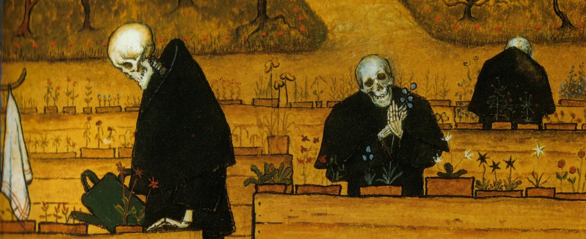

History of Medicine
How American medicine learned to talk about dying — and how law, clinical practice, and culture pulled against each other while it did.
How American medicine learned to talk about dying
- Question
- How did legal, clinical, and cultural developments from the late twentieth century onward reshape American end-of-life care?
- The courts
- From In re Quinlan (1976) to Cruzan (1990): how courts came to decide who may stop treatment for a patient who can no longer speak, and where they drew the line between patient autonomy and the limits of medical intervention. Quinlan was decided here in New Jersey.
- The physicians
- A comparative reading of three doctors writing about death from inside medicine: Sherwin Nuland’s How We Die (1994), Atul Gawande’s Being Mortal (2014), and Haider Warraich’s Modern Death (2017). All three agree that medicine has made dying harder; the paper reads them against each other for what each thinks went wrong.
- Where it stands
- Independent study, fall 2026, developing original scholarship for submission to a peer-reviewed humanities journal.
Hover or tab to a mark to read it.
the courts the physicians 1970–2020